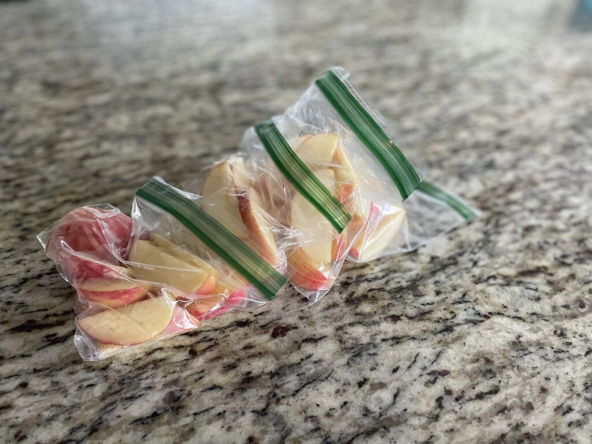
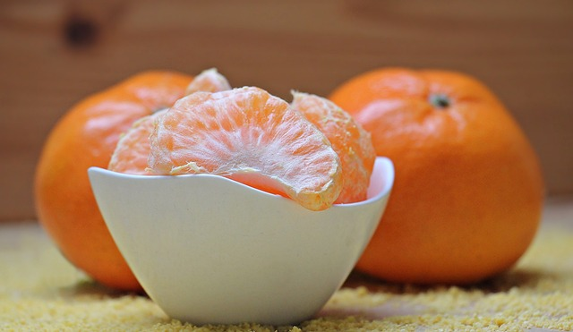
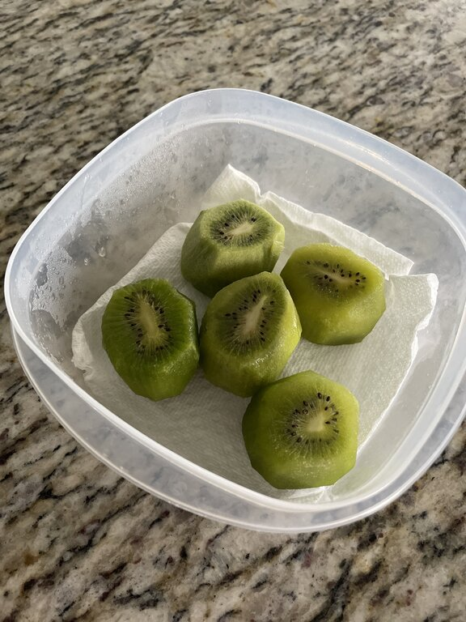

Fruit Prep
How to Properly Prepare and Store Fruit
The first thing to consider when preparing your fruit for the week is which fruit should be eaten first. Some fruit is more delicate and should be consumed before the other hardier fruits. Storage is also important. Delicate fruit can be preserved longer if it is treated properly.
Consider the following fruit lineup for the week:
Apples
Kiwi
Strawberries
Cuties
I like to make time in my week for two separate food prep sessions. I usually need about an hour on Monday and another hour on Thursday. Monday is when I prepare the fruit that should be eaten first. From the list above, the more delicate fruit would be the kiwis and strawberries. To make those as easy to eat as possible, I wash them and prepare them for immediate consumption. Kiwis are peeled and cut in slices, and for the strawberries I remove the leaves on the top and quarter them. For storage, I place them in a tupperware container with a paper towel in the bottom. The paper towel helps the more delicate produce items last longer in the fridge.
At this point you may be asking yourself, "How difficult is it to cut a few strawberries right before lunch?" And I will respond by saying, it's not too hard at all. However, I have 5 small children, and lunchtime can be hectic. If I want my kids to eat healthy food it needs to be the most convenient option. In a perfect world I would have 15 uninterrupted minutes to prepare a healthy lunch for my kids, but that rarely happens. When kids get hungry and chaos ensues, I am always happy I am prepared!
  